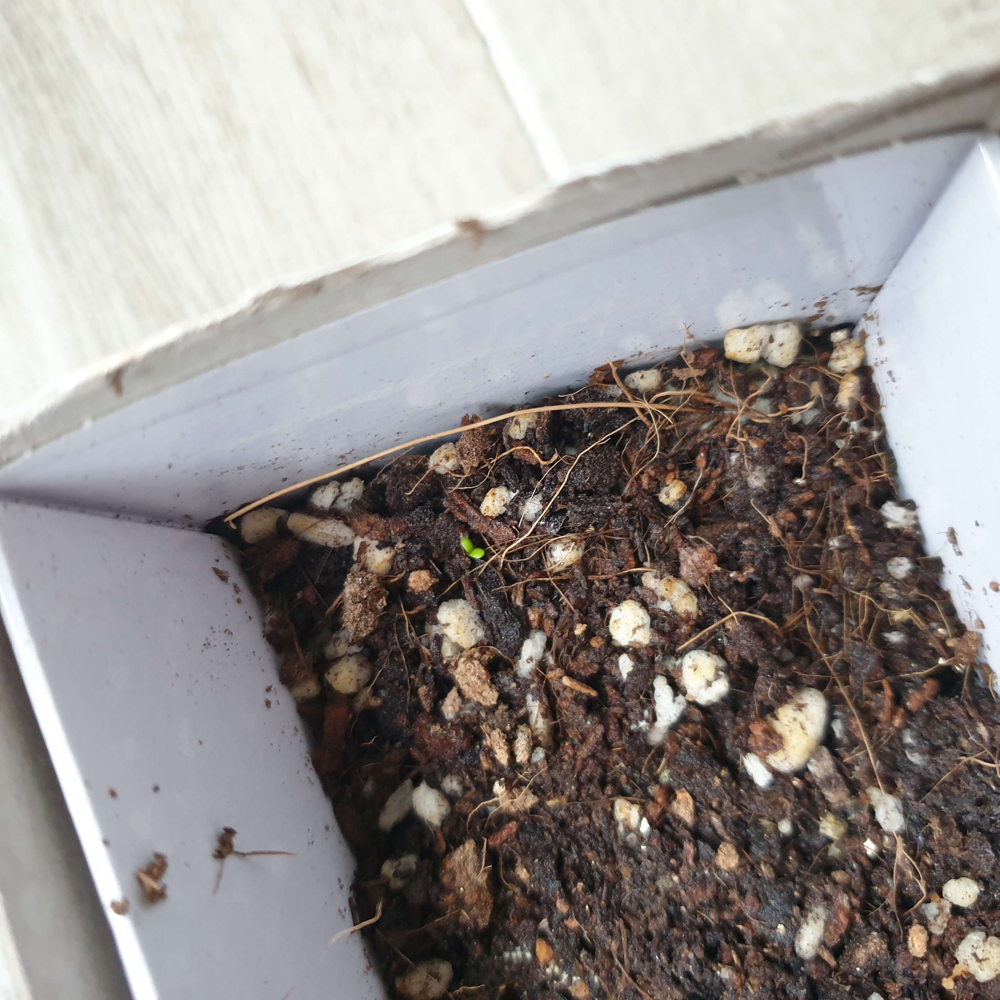

제목: 딸기 새싹 난 날🌱 날짜: 2021.04.03 날씨:🌞
오늘 드디어 딸기 새싹이 났다. 너무너무 작고 귀여운 새싹이였다! 심은지 약 2주가 될 때까지 새싹이 나지 않아서
혹시 새싹이 나기도 전에죽은건가 하고 걱정했었는데 다행이다. 딸기는 모종이 될 때까지 키우는 것이 어렵다고 하던데
그 때까지 잘 자라면 좋겠다. 친구들에게 새싹이 났다고 자랑했는데 나중에 딸기 수확하면 한개씩 달라고 했다.
이제 막 새싹이 났는데..벌써 잡아 먹을 생각을 하다니...잔인한 친구들..
